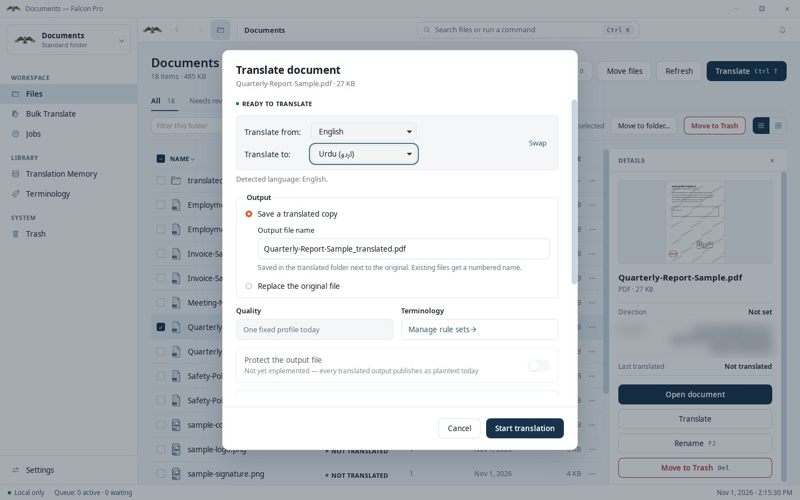
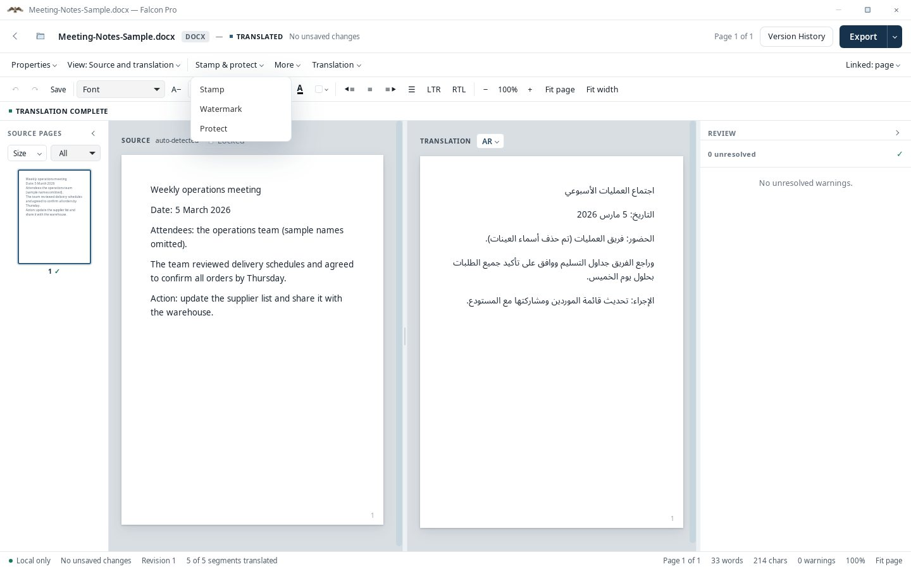
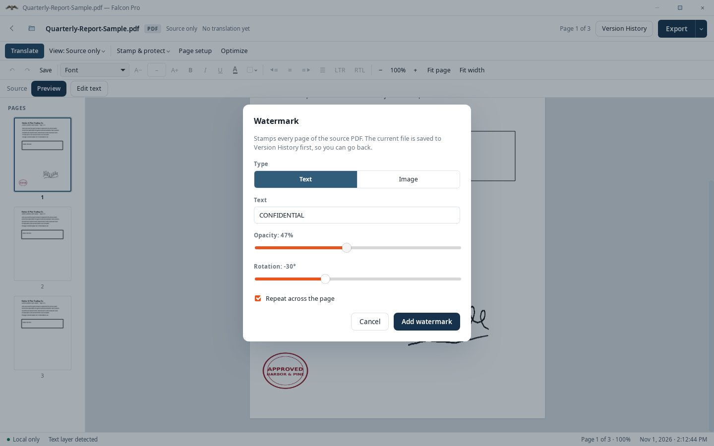
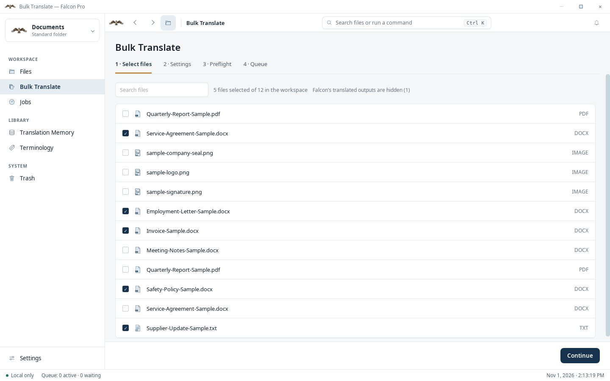
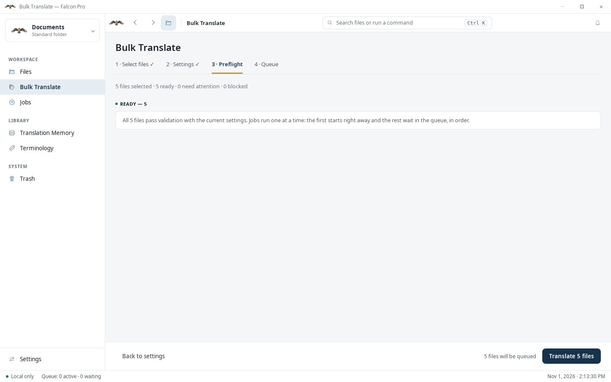
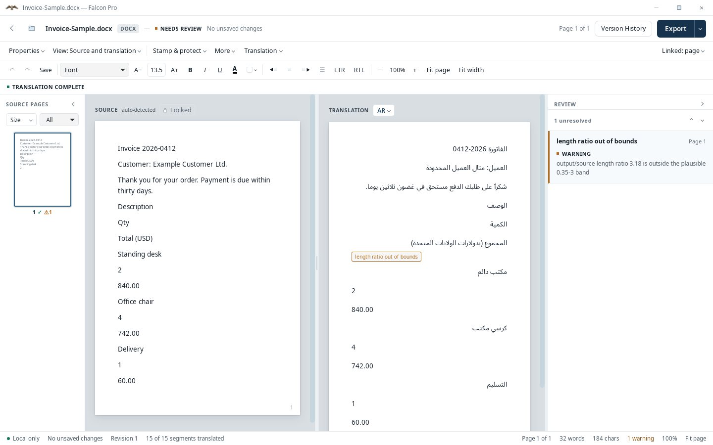

Features & tour
Explore translation, editing, stamps and watermarks through real app recordings and screenshots. All sample documents were written for these demonstrations.
One click, side by side
Pick a file, choose the language pair and start. Falcon opens the English source beside the Arabic translation so you can check it line by line, on the same computer.
- Word and PDF in, the same format out
- Choose the language pair and where the translated copy is saved
- The translation opens in the editor when it finishes
- Translation and OCR run on your computer after model setup
- Review scanned Urdu carefully: OCR for it is not yet fully validated




Signature, seal and logo, placed by hand
Draw, type or upload a signature stamp, add your company seal or logo, and drag each into place on the page. The original is backed up automatically.


Mark every page at once
Add a text or image watermark to every page of a PDF. Set how strong it is, how it is rotated, and whether it repeats across the page. The current file is saved to Version History first, so you can go back.




A whole folder in one run
Tick the files, choose the language pair, and Falcon checks them before it starts. Jobs run one after another, and you can follow, pause or cancel them from the Jobs page.



Falcon flags what needs a second look
When a translated segment looks wrong, for example far longer or shorter than the source, the review panel says so and the file is marked Needs review. Fix the line, retry it, or mark it reviewed.
- Edit translated text and basic formatting beside the source
- Check numbers, dates and protected terms before exporting
- Compare saved versions and restore earlier work from Version History


Your terms, applied every time
Curated Arabic and English term sets for Saudi legal and insurance work can be turned on per workspace, and you can add your own rules. Required and protected terms are applied while translating.
One guided install
On first run Falcon downloads the language packs once, checks them, and then works offline. This clip shows a real download and verification, sped up eight times.


Short codes, safe bundles
Problems show a short code such as FLC-3007. Diagnostics lists them and can create a support bundle with your home folder and file names removed. Look up a code.
All documents, names and company details in these captures are invented for demonstration. They are not real people, companies or agreements. Screens come from a Falcon Pro 1.0.0-beta build and may differ slightly from your version.